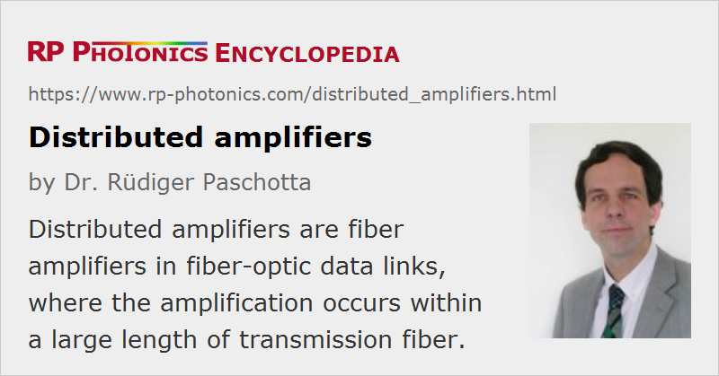

Distributed Amplifiers
Definition: fiber amplifiers in fiber-optic data links, where the amplification occurs within a large length of transmission fiber
More general term: optical amplifiers
German: verteilte Verstärkung
Categories: fiber optics and waveguides, lightwave communications
How to cite the article; suggest additional literature
Author: Dr. Rüdiger Paschotta
For longer fiber-optic links as used for long-haul data transmission, one or several fiber amplifiers are usually needed for obtaining a sufficiently high signal power at the receiver and maintaining a high enough signal-to-noise ratio for the required bit error rate. In many cases, such amplifiers are discrete amplifiers, realized with a few meters of some rare-earth-doped fiber, which is pumped with a fiber-coupled diode laser and used as part of the transmitter, or just before the receiver, or somewhere between parts of the transmission fiber. However, it is also possible to employ so-called distributed amplification in a long length of the transmission fiber itself, where the pump power is typically injected at the receiver or transmitter end, or from both directions. Such a distributed amplifier may have a similar overall gain, but a much lower gain per unit length. It is meant to approximately maintain a reasonable signal power level in the presence of propagation losses, rather than increasing the power level by tens of decibels.
General Advantages and Disadvantages
An advantage of using distributed amplifiers is that this approach normally leads to a lower accumulation of amplifier noise within the link. This is essentially because the signal power level is prevented from dropping to a very low level, as it can occur between discrete (lumped) amplifiers. The maximum signal power level can then actually be reduced without obtaining excessive amplifier noise. This also reduces the potentially detrimental effect of fiber nonlinearities.
An important disadvantage is that distributed amplifiers generally require higher pump powers. This applies to both Raman amplifiers and rare-earth-doped amplifiers, which are discussed below.
The detailed advantages of different types of amplifiers depend on the type of transmission system and its characteristics. For example, there are specific aspects which are relevant only for soliton-based systems, and the wavelength region and signal bandwidth are also important factors to be considered.
Distributed Laser Amplifiers
A distributed amplifier can be realized in essentially two different forms. The first one is to use a transmission fiber which contains some rare-earth dopant such as erbium (Er3+), but with a much lower doping concentration than a regular amplifier fiber. Although the material of silica fibers, as normally used for transmission, exhibits a low solubility for rare earth ions, a low concentration can be incorporated without quenching effects. However, it is difficult to optimize the fiber also for a large gain bandwidth, as the transmission fiber is subject to further constraints. In particular, any dopants need to be avoided which substantially raise the propagation losses, whereas in a short discrete amplifier these are typically not a serious issue.
Note also that the pump light for a distributed amplifier needs to be delivered over a substantial length, and is therefore also subject to propagation losses – even more than the signal light, if the pump wavelength is significantly shorter than the signal wavelength. A long distributed erbium amplifier should thus be pumped around 1.45 μm rather than the otherwise often used wavelength of 980 nm. This introduces further restrictions on the spectral shape of the amplifier gain. Even with a long pump wavelength, the pump losses lead to the requirement of a higher pump input power, compared with that of a discrete fiber amplifier.
Distributed Raman Amplifiers
Another type of distributed amplifier is the Raman amplifier, where no rare earth dopant is required, and stimulated Raman scattering is used for amplification. Again, the transmission fiber can hardly be optimized for Raman amplification, as the propagation losses need to be low, and the pump light is also subject to propagation losses. Therefore, substantial pump powers are needed.
The gain spectrum achieved with a single pump source is essentially determined by the chemical composition of the fiber core. Broader gain spectra, possibly with a tailored shape, can be achieved by using some combination of different pump wavelengths.
Questions and Comments from Users
Here you can submit questions and comments. As far as they get accepted by the author, they will appear above this paragraph together with the author’s answer. The author will decide on acceptance based on certain criteria. Essentially, the issue must be of sufficiently broad interest.
Please do not enter personal data here; we would otherwise delete it soon. (See also our privacy declaration.) If you wish to receive personal feedback or consultancy from the author, please contact him e.g. via e-mail.
By submitting the information, you give your consent to the potential publication of your inputs on our website according to our rules. (If you later retract your consent, we will delete those inputs.) As your inputs are first reviewed by the author, they may be published with some delay.
Bibliography
| [1] | A. Hasegawa, “Numerical study of optical soliton transmission amplified periodically by the stimulated Raman process”, Appl. Opt. 23 (19), 3302 (1984), doi:10.1364/AO.23.003302 |
| [2] | L. F. Mollenauer et al., “Soliton propagation in long fibers with periodically compensated loss”, IEEE J. Quantum Electron. 22 (1), 157 (1986), doi:10.1109/JQE.1986.1072858 |
| [3] | M. Nakazawa et al., “Ultralong dispersion-shifted erbium-doped fiber amplifier and its application to soliton transmission”, IEEE J. Quantum Electron. 26 (12), 2103 (1990), doi:10.1109/3.64345 |
| [4] | E. Desurvire, “Analysis of distributed erbium-doped fiber amplifiers with fiber background loss”, IEEE Photon. Technol. Lett. 3 (7), 625 (1991), doi:10.1109/68.87934 |
| [5] | S. Wen, “Distributed erbium-doped fiber amplifier for soliton transmission”, Opt. Lett. 19 (1), 22 (1994), doi:10.1364/OL.19.000022 |
| [6] | Y. Emori et al., “100 nm bandwidth flat-gain Raman amplifiers pumped and gain-equalized by 12-wavelength channel WDM laser diode unit”, Electron. Lett. 35, 1355 (1999), doi:10.1109/OFC.1999.766052 |
| [7] | V. E. Perlin and H. G. Winful, “On distributed Raman amplification for ultrabroad-band long-haul WDM systems”, J. Lightwave Technol. 20 (3), 409 (2002) |
| [8] | T. Zhang et al., “Distributed fiber Raman amplifiers with incoherent pumping”, IEEE Photon. Technol. Lett. 17 (6), 1175 (2005), doi:10.1109/LPT.2005.846479 |
See also: fiber-optic links, fiber amplifiers, Raman amplifiers
and other articles in the categories fiber optics and waveguides, lightwave communications
|  |
If you like this page, please share the link with your friends and colleagues, e.g. via social media:
These sharing buttons are implemented in a privacy-friendly way!